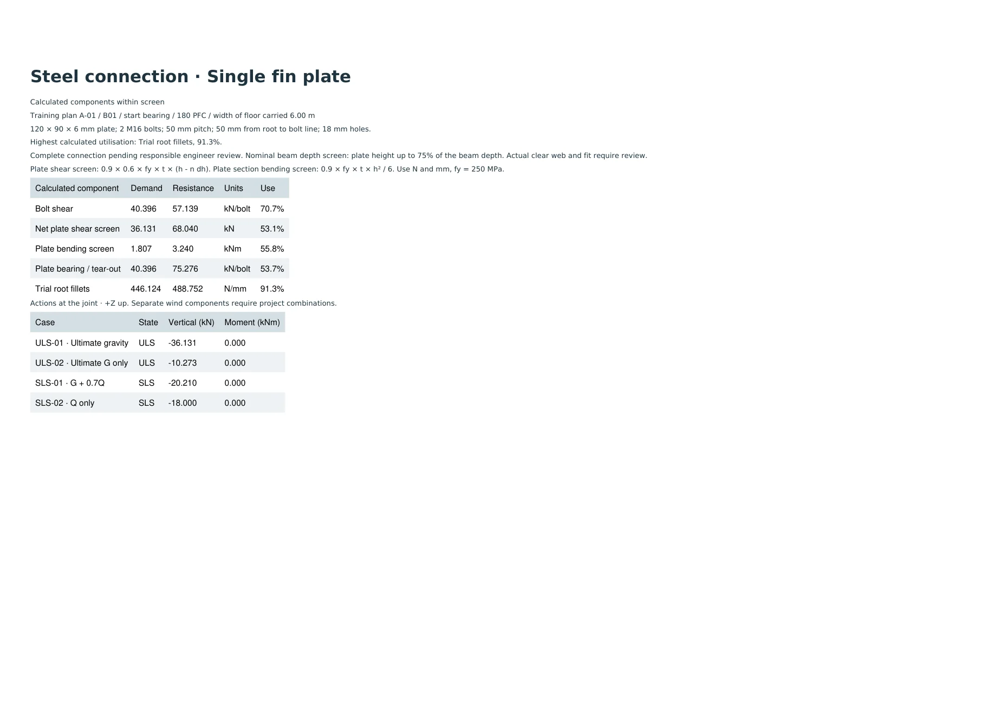

Two bolts at the kitchen opening
Follow the 36.13 kN downward ultimate action at the start bearing of beam B01 into a 120 × 90 × 6 mm fin plate. At the same 50 mm pitch, compare two M16 bolts with two M12 bolts. Each trial includes the case register, worked equations and remaining checks.
The calculation uses the AS 4100:1998 component model. The engineer must confirm the applicable edition, supporting steel, weld detail and complete connection for the project.
Loading the report…
